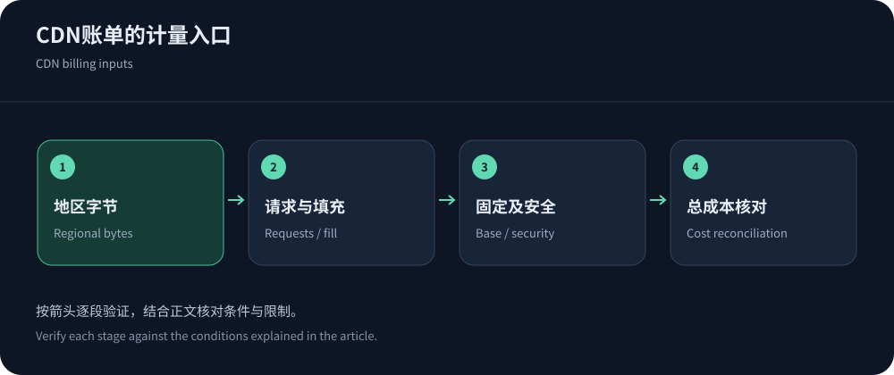
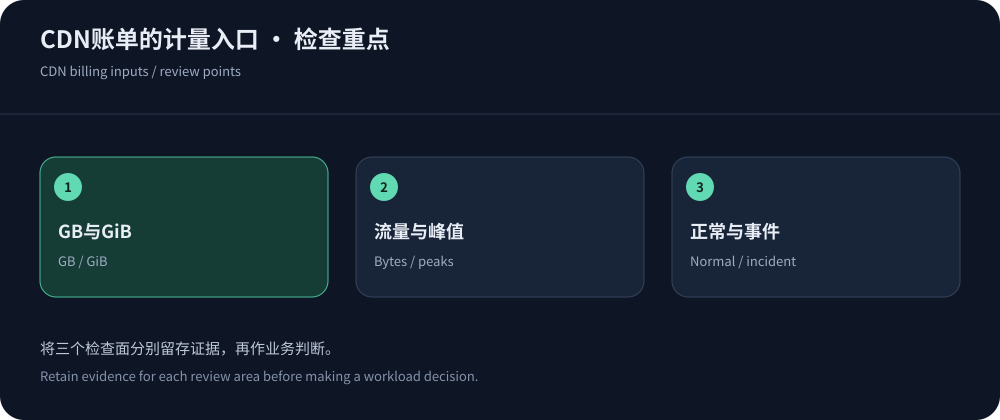

Start with the billing unit
CDNs may meter bytes, bandwidth statistics, requests and subscriptions together. User delivery, cache fill, origin egress and inspection are distinct work. Identify object, region, unit and period before comparing rates.
Public information was checked on 14 October 2026. Without workload data there is no reliable total quote. Gather regional transfer, requests, object size, origins and security, preserving original billing units.
Transfer billing combines bytes and geography
Transfer charges usually sum regional volume times applicable tiers, plus other components. Tier aggregation may differ by account or distribution. Compression reduces bytes without necessarily reducing requests; cache hits reduce origin fetches, not user delivery bytes.
Google CDN pricing uses GiB and separates delivery/fill/lookups. GiB differs from decimal GB. Its listed mainland-destination delivery is served from outside mainland China; pricing geography does not establish local-node eligibility.


Bandwidth pricing reacts to peaks
Bandwidth is a rate; contracts may use peaks, commitments or percentile statistics with specific sampling rules. Monthly average throughput cannot predict a peak-based bill.
A hypothetical decimal 1TB uniformly delivered over thirty days averages about 3.09Mbps. This is unit arithmetic, not a benchmark or adequate peak capacity. Retain time-series samples and require a reproducible billing calculation.
Small objects can still create request costs
Small responses with high frequency can be request-cost dominated. WAF, bots, challenges, compute and logs may meter separately. AWS WAF lists base examples of $5/ACL-month, $1/rule-month and $0.60/million requests, with additional conditions/components.
Include polling, retries and abnormal traffic. Use appropriate caching, coalescing, backoff or push semantics; do not remove authentication or permit unlimited retries to chase a lower bill.
Subscriptions require scope and over-limit checks
CloudFront lists fixed Free/Pro/Business/Premium plans at $0/$15/$200/$1,000 monthly alongside metered options. Check distribution scope, allowances and conditions rather than applying legacy free-tier assumptions.
Cloudflare and CDN5 offer other plan models. CDN5 Standard lists $499 monthly or $5,000 annually; annual prepayment has a different commitment. Verify traffic, domains, protocols and support without inferring unlimited allowances.
Cache hits affect different bills differently
Frequent small-object hits can hide a large cold-video fetch. Use byte misses for fill estimates and reconcile actual origin egress, while request hits describe counts. Neither alone measures application compute.
Broad purges can cause regional refill without user growth. Record invalidation/warming and trace work changes before assuming price changes.
Retain currency and tax terms. Any conversion needs a dated rate; otherwise keeping the original currency is clearer than invented precision.
Inputs for a reusable budget
A budget should expose assumptions, not only a total. These fields cover common websites; add workload-specific media/protocol charges. See billing comparison.
| Field | Source | Check |
|---|---|---|
| Region/delivery | Invoices or audience-based forecasts with original units. | Regional attribution and tier aggregation. |
| Requests/objects | Logs, object sizes, polling and retries. | Blocked/failed requests and extra compute charges. |
| Origin/fill | Misses, purges, warming and origin bills. | Request versus byte hit ratios and cross-region charges. |
| Fixed/incident costs | Plans, logs, support, scrubbing, upgrades and labor. | Commitment, overages, attack billing, protections and exit. |


Validate the model against actual invoices
Reconcile dashboards, logs and invoices in common units/timezones. Explain differences through sampling, retries, fill or metering rather than inventing balancing numbers. Assign owners to budget alerts.
Preserve quote/contract/configuration versions through the buying process. Recalculate equal workloads at renewal to distinguish growth, mix and price changes.